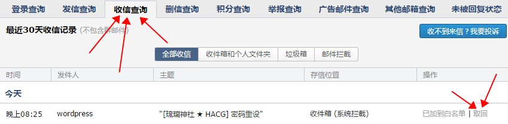
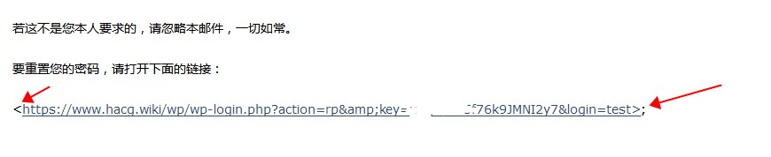
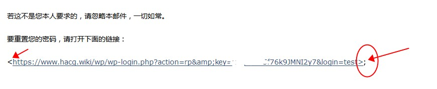

琉璃神社 只是一个重度宅的记事本， 站长在看完某些动画之后就会去搜集一些周边信息，同人，或者游戏，于是自我记录保存。 如果你们不慎误入本站，请自觉遵守宅文化条约，不要进行人身攻击。或者爆菊行为。 如果你喜欢本站，请不要宣传本站， 本站不盈利，服务器也是别人不用的垃圾服务器，访问人数太多就会崩溃。 站长常年在东京打工，虽然收入不是很高，但是服务器费用还是出的起的， 本站没有任何所谓的收款赞助账号，请各位防止上当被骗。任何冒充赞助神社求赞助的都是骗子！ 本站没有任何所谓的官方QQ群，微博，微信，贴吧，网店等之类的东西都是不存在的，注意防止骗子！ 本站也 绝对不会 用任何方式 向你们收钱，本站不需要任何赞助，请不要赞助本站，谨防骗子！ 本站不提供任何下载服务，请不要到处询问如何下载，就算是你登入了，也是没有下载链接的。 关于琉璃神社APP，这属于网友在闲暇时自主开发，与琉璃神社并无关系 。。。私人站点，在任何时间地点，都请不要宣传本站。。。谢谢。。。
不用太纠结。少上点网，多点运动，好好学习，天天向上。
注册以及找回密码的相关问题解释：
本站没有会员系统，注册什么的也没必要，就算成为会员也没有什么好处，登陆会员只会让浏览网站的速度变得更慢。
本站注册后可以投稿，不会编辑HTML代码，可以不用投稿，肯定审核不通过。。。
所以不投稿的可以不用注册。。。也不用登入
注册如果无法收到邮件的，请查看 垃圾邮件
点击QQ邮箱的底部，【自助查询】

点击【收信查询】，点击 【添加到白名单】，点击 【取回】。
然后到你的收件箱里面，点一下【收信】就可以收到注册确认邮件了

收到 注册邮件，或者 找回密码 邮件 后
会出现 该KEY无效 情况，主要原因是邮箱会 自动识别链接 导致的：
 
如图显示，把链接最后的这个 >; 删除了就再打开就可以解决 key无效 的问题了。
关于登陆口的 Google Authenticator 设置 #点击查看#

关于发布文章的一些相关介绍：
关于网站发帖文章少的问题，其实这个要的不是数量，要的是质量，取精华而去糟粕。。主要还是精力时间有限，只能选一些个人口味的东西发布。 欢迎订阅RSS
每个帖子都会仔细编辑，让以后的人也能看的懂。。而不是一个标题一个地址那么简单。。
为了防止世界被破坏，本站只适合重度宅，而且需要一点点的技术。年龄在大学生以下的，不建议访问本站，因为你可能看不懂。
================
注册账号之后，可以去后台设置昵称，，然后选择 公开显示为 【昵称】
如何修改评论头像：
请使用你的email注册账号，上传你的头像，就可以了
（评论区填写的邮箱地址，其实就是头像地址）
你的头像必须选择点击 G-全年龄级别
你需要等待几分钟，通过头像审核。。。
然后以后你去其他的 基于wordpress系统 的网站上都可以显示你的头像了。。
虽然是英文但是操作很简单的哦。。。
不会的可以用google翻译一下。。。
没开启本地上传头像，主要是为了缓解小霸王服务器压力，嘿嘿。。
希望多多投稿。。分享。。。
=============================
投稿：
欢迎大家投稿，但是注意插图不能露点！！！要和谐你懂吗？好资源大家一起分享。
这个小站，反正就是几个认识的ACG朋友们娱乐用的，并没有什么商业用途。 评论不需要注册，请不要发令人反感的内容。 千万不要发露点图，禁止淫秽色情图片，禁止与当地法律相抵触的东西，恩，大家应该都懂的。。。 请发邮件举报！ 帖子发布都是有格式的，至于什么格式请参考已经发布文章的对应区域 例：游戏区需要制品信息，人物介绍，背景故事，预览图片(CG) 漫画区则没那么复杂，有作家信息就写，没有就算了，可以写写自己阅读后的感受或者作品的背景 至于为何需要制品信息，这是方便后人前来查询，比如游戏官网或者作者微博
不会做种？点击查看教程 http://www.liuli.pw/wp/52150.html
后台的一些特殊功能：
<!–more–> 这个标签是必须要有的，就是首页的分割 继续阅读
还有 <pre> 引用区块 </pre> 折叠抽屉，【toggle Title="点我展开 我是标题"] 要折叠的内容 [/toggle】 【】换成[]点我展开 我是标题
图床
推荐使用 新浪微博图床
国外可以使用 http://imgur.com/
音乐和视频
请直接使用 .mp3 结尾的直链地址
举例：http://www.liuli.pw/123.mp3 这样直接单独写一行，不需要代码，会自动转换成播放器。
**可替换为任意后缀一般是mp3
一些其他的说明 比如 插入图片 代码 <img src=”http://图片地址” alt=”” />
如果不会插入音频或者视频，请直接插入音乐或者视频网站播放页面网页地址
小编会帮您插入播放代码，支持优酷，网易云音乐等主流网站
遇到一切问题都可以发邮件，讨论版下留言。。
很少几乎不用QQ，联系请使用邮件。 有问题的话可以在下面留言，或者给我发邮件。 有什么问题，或者有什么建议，版权，违规内容，都可以发邮件告诉我。我会尽快删除。 讨论区地址 https://www.llss.pw/wp/bbs 站长邮箱 misaki#hacg.tv (#换@) 我会尽量解决大家遇到的问题。。。
===========================
Privacy
All information provided by the user is strictly confidential. HACGME Inc reserves the right to distribute aggregated demographic information provided by the user, but HACGME Inc will never release any personal information about the user without permission. However, HACGME Inc reserves the right to release user information if user has violated the HACGME Inc Terms of Service, if the user has committed unlawful acts, if the information is subpoenaed, or if HACGME Inc deems it necessary or appropriate.
Legal Policy
HACGME Inc Terms of Service are subject to change without notice. All files are copyrighted © to their respective owners. HACGME Inc directs full legal responsibility of files to their respective users. All other content copyright © HACGME Inc 2010. HACGME Inc is not responsible for the content any uploaded files, nor is it in affiliation with any entities that may be represented in the uploaded files.